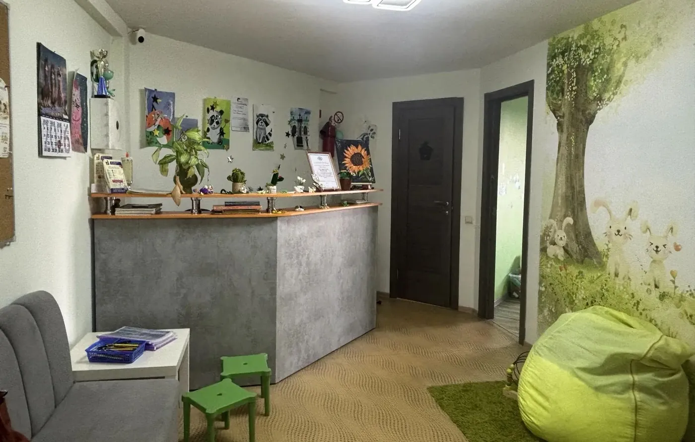
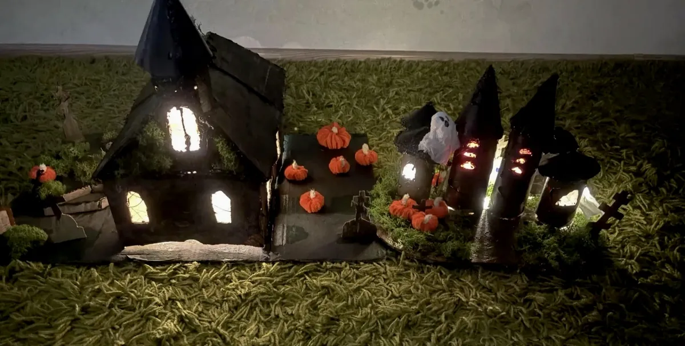
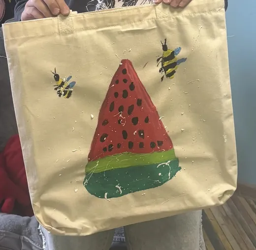
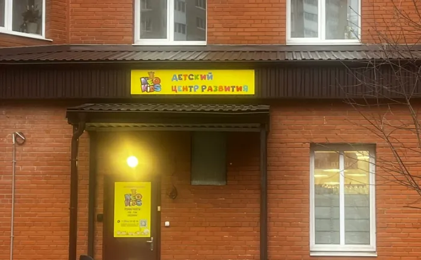
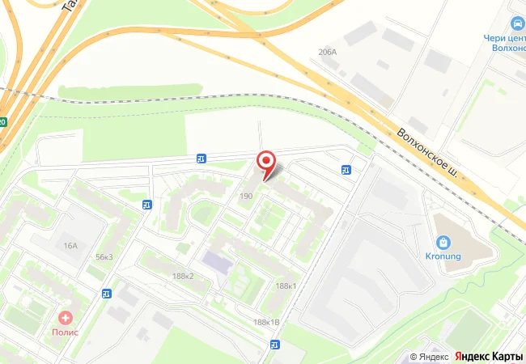

Ритмика
с 3 лет
Игровой фитнес для малышей: координация, ловкость, чувство ритма. Без перегруза.
Пн, Ср 17:00-17:40, старт 2 ноября
- Пробное
- 700 ₽
- Разовое
- 900 ₽
- 4 занятия
- 3 500 ₽
- 8 занятий
- 6 400 ₽
Нео Кидс на Коммунаров, 190, в Горелово. Айкидо, подготовка к школе, рисование, английский, танцы, логопед и психолог. Для детей от 3 лет, а айкидо и для взрослых.

Выберите возраст, и в неделе останутся только подходящие занятия. Нажмите на занятие, чтобы увидеть все цены.
В этот день для этого возраста занятий нет
В этот день для этого возраста занятий нет
В этот день для этого возраста занятий нет
В этот день для этого возраста занятий нет
В этот день для этого возраста занятий нет
В этот день для этого возраста занятий нет
Расписание и цены из услуг группы ВКонтакте на 31 октября 2026 года. Логопед занимается индивидуально с понедельника по пятницу с 16:30. Психолог для детей и родителей и рисование с психологом для 4-5 лет работают по записи.
Сначала можно прийти на пробное занятие. На айкидо оно бесплатное.
с 3 лет
Игровой фитнес для малышей: координация, ловкость, чувство ритма. Без перегруза.
Пн, Ср 17:00-17:40, старт 2 ноября
с 3 лет
Рисуют, лепят, работают с цветом, формой и разными материалами. Развивает мелкую моторику.
Пн, Ср 18:00-18:40
5 лет
Мягкий старт: внимание, мышление, речь, умение слушать педагога и заниматься в группе.
Вт 18:00-19:10
6 лет
Готовят к первому классу: внимание, речь, навыки работы на уроке и школьная нагрузка.
Пн, Ср, время уточняйте по телефону
дети
Слова, речь на слух и уверенность на школьных уроках. Группы и индивидуальные занятия.
Вт, Чт с 17:30; Пт 10:30 индивидуально
с 6 лет
Дисциплина, координация, выносливость. Ведут инструкторы клуба Айкикай «СинГиТай».
Ср, Пт 18:10-19:20
школьники
Для тех, кто любит рисовать: композиция, аккуратность, работа с материалами.
Пн, Ср 18:00-19:00
с 7 лет
Основы современного танца, гибкость, ритм, выступления и работа в команде.
Пн 18:00-19:00
дети
Учатся думать на несколько ходов вперёд, тренируют память и внимание. Группа и индивидуально.
Сб 16:00
8-12 лет
Тренинги через игры и сценки: выражать чувства, слушать других, решать конфликты, уверенно говорить о себе.
Сб 12:00
4-5 лет
Арт-терапия: рисунки на темы «Домик», «Дерево», «Человек». Психолог помогает снизить тревожность.
по записи
дети
Индивидуально: звукопроизношение, артикуляция, речевые навыки.
Пн-Пт с 16:30, индивидуально
дети и родители
Эмоции, поведение, общение, возрастные трудности. Консультация, диагностика, подбор решений.
по записи
взрослые
Форма, координация, выносливость в спокойном темпе. Подходит и новичкам.
Ср, Пт 19:30-21:00
Детективная смена «Следствие ведут супер-агенты» на осенних каникулах. Для детей от 7 лет, с 10:00 до 14:00, а вечер ребёнок проводит с семьёй.
Время можно сдвинуть под вашу семью. Даты следующей смены уточняйте по телефону.
Цена написана невидимыми чернилами. Посветите фонариком.
1 900 ₽ один день, 4 часа
9 000 ₽ пять дней

В центре проходят мастер-классы: замки из картона, роспись пряников, новогодние игрушки, картины на холсте. Здесь же празднуют дни рождения и ставят новогодние ёлки и отчётные концерты.
Спросить про праздник«…те, кто устал отмечать Дни Рождения дома, могут смело приходить на творческий мастер-класс, где каждый уйдет с картиной…»

Имена педагогов и слова родителей из отзывов в 2ГИС.
Айкидо
«Тренер внимательная и профессиональная, занятия интересные и безопасные, ребёнок стал увереннее».
Логопед
«Она смогла сделать то, что у других не получилось за 1,5 года!»
Современные танцы
«…доступно объясняет технику, даёт интересные комбинации и вдохновляет детей».
Психолог
«Уже после пары встреч стало меньше ссор, а потом и вовсе появились спокойные разговоры».
«…не рисует работы вместо ребенка, а направляет, подсказывает».
5,0 в 2ГИС, 13 оценок. Читать отзывы«Сын занимается Айкидо с удовольствием, а дочка ходит в Арт-студию и на подготовку к школе».
Горелово, ЖК «Дудергофская линия 3». Вход с улицы, под жёлтой вывеской «Детский центр развития».

